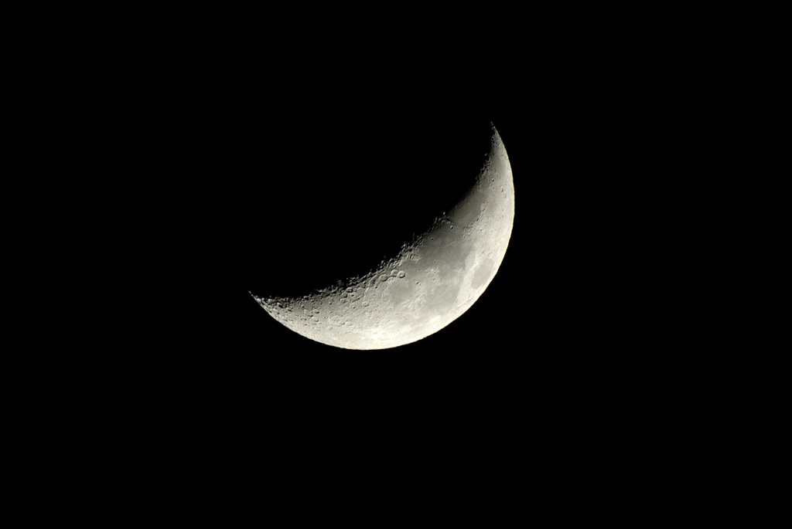
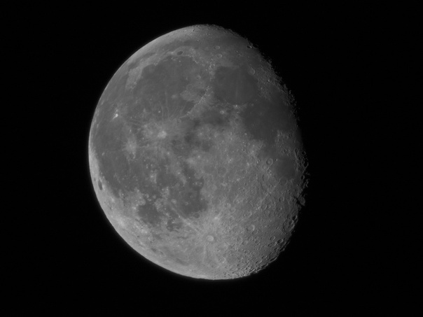
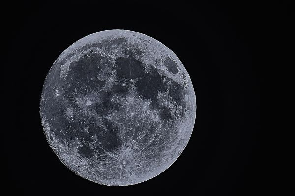
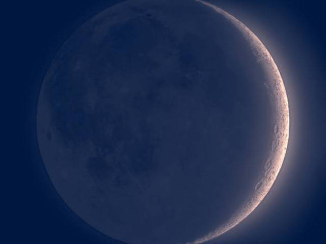

Фазы Луны – периодически меняющиеся степени освещенности Луны Солнцем. Выделяют следующие фазы: новолуние, растущая Луна
(первая фаза, первая четверть, вторая фаза), полнолуние и убывающая Луна (третья фаза, третья четверть, четвертая
фаза).Луна влияет на жизненную активность человека, его самочувствие. Лунный гороскоп подскажет, когда лучше начинать
новые дела, менять место работы, решать денежные вопросы, знакомиться с новыми людьми, работать по дому, стричься,
обращать особое внимание на здоровье.

Первая Фаза (растущая Луна)
Растущая Луна — это период от Новолуния до первой четверти, то есть с 1 по 7 лунный день.
В этот период Луна находится между Землей и Солнцем примерно на одной прямой линии, поэтому мы её практически не видим.

Вторая фаза Луны
Вторая - растущая Луна - это фаза роста луны, когда с Земли с каждыми сутками виден все больше растущий месяц, вплоть до
полнолуния

Полнолуние
Полнолуние — это фаза Луны, при которой разность эклиптических долгот Солнца и Луны равна 180°.
Это означает, что плоскость, проведённая через Солнце, Землю и Луну, перпендикулярна плоскости эклиптики. Если все три
объекта находятся на одной линии, происходит лунное затмение.
Луна в полнолунии имеет вид полностью освещённого круга.

Новолуние
Новолу́ние — фаза Луны, при которой ее эклиптическая долгота такая же, как у Солнца. Таким образом, в это время Луна
находится между Землей и Солнцем примерно на одной прямой с ними